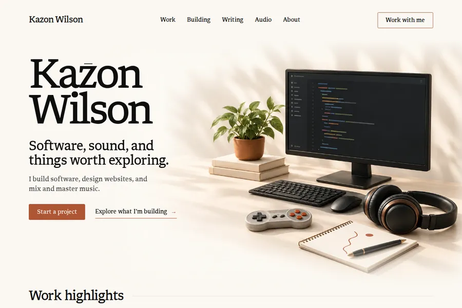
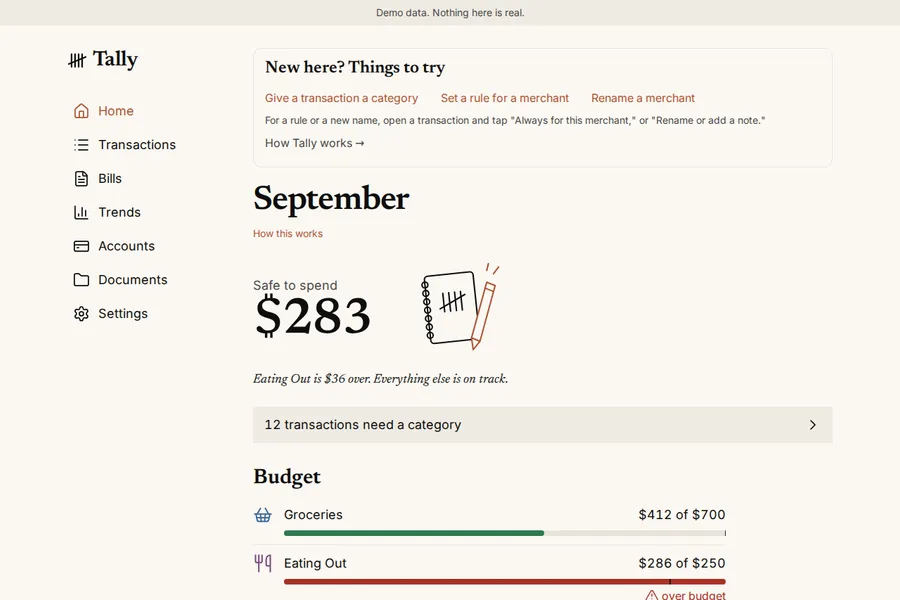

Work with me
Three ways to work with me.
Mixing & mastering

Website design

Software engineering
Every project is fixed price and agreed in writing before work begins.Vocal mixing from $150, mastering from $75.For a site people can read on a phone and act on.I build web apps people can try, or a tool that makes a task your team repeats easier.
Old News · recorded, mixed and mastered by KazonThis site, redesigned September 2026Tally · a budgeting app, public demo
thesuperhuman.us/services